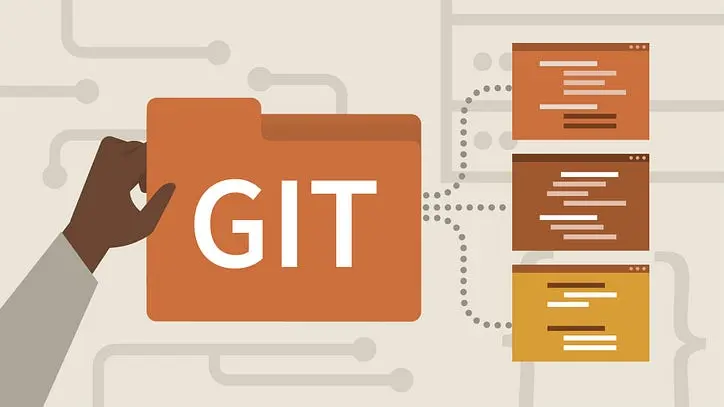

Guide Git
C'est quoi Git ?
Git est un logiciel de gestion de versions décentralisé. C'est un logiciel libre et gratuit, créé en 2005 par Linus Torvalds, auteur du noyau Linux, et distribué selon les termes de la licence publique générale GNU version 2. Le principal contributeur actuel de Git, et ce depuis plus de 16 ans, est Junio C Hamano.
L'histoire de Git
Git a été spécialement développé et optimisé pour le noyau Linux. Linus Torvalds a commencé son écriture en avril 2005, pour remplacer le programme propriétaire BitKeeper. En effet, Larry McVoy a révoqué la possibilité d'utiliser gratuitement son logiciel, après qu'Andrew Tridgell eut tenté une rétro-ingénierie sur les protocoles utilisés par BitKeeper. Les raisons de cette révocation restent toutefois controversées.
La première version a été publiée le 7 avril 2005. Depuis, le développement de cet outil s'est poursuivi. Il a été progressivement amélioré, se voyant doté d'interfaces graphiques, d'interfaces web ou de scripts évolués.
Fin juillet 2005, Linus Torvalds a décidé de confier la maintenance et les évolutions de Git à Junio Hamano, expliquant qu'il avait « toujours dit qu'il ne voulait pas vraiment le maintenir sur le long terme ».
Le développement est très actif. La parution de la première version stable (1.0) date du 21 décembre 2005, soit moins d'un an après le démarrage du projet.
Pour des raisons de sécurité, des travaux pour passer l’algorithme de hashage de SHA-1, considéré plus assez sécurisé, à SHA-256 sont en préparations